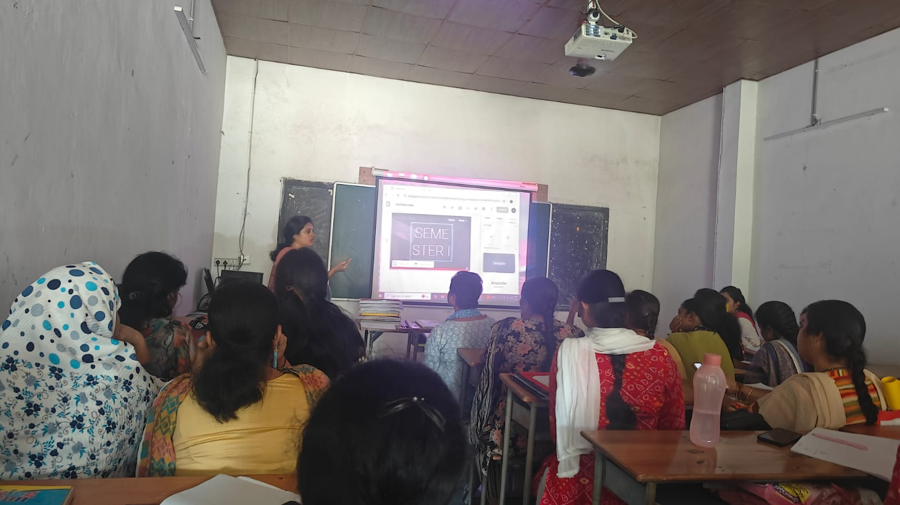
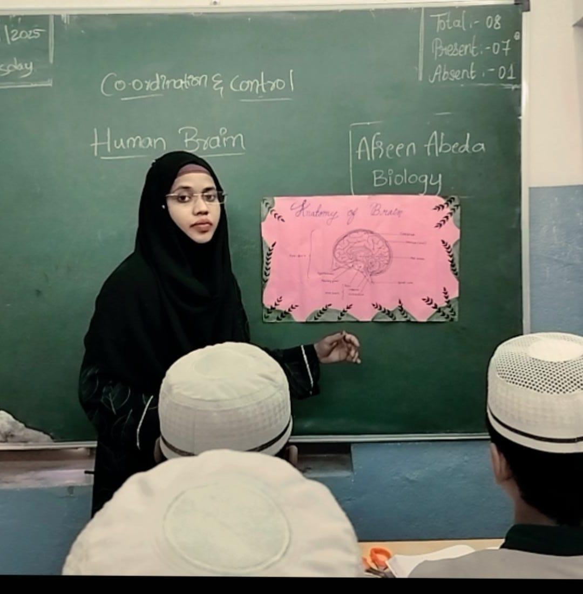
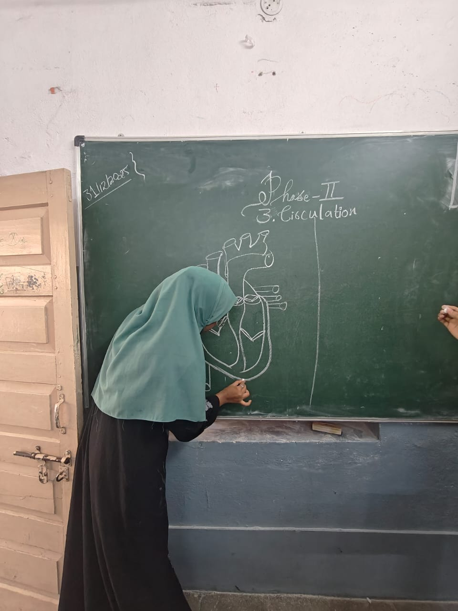
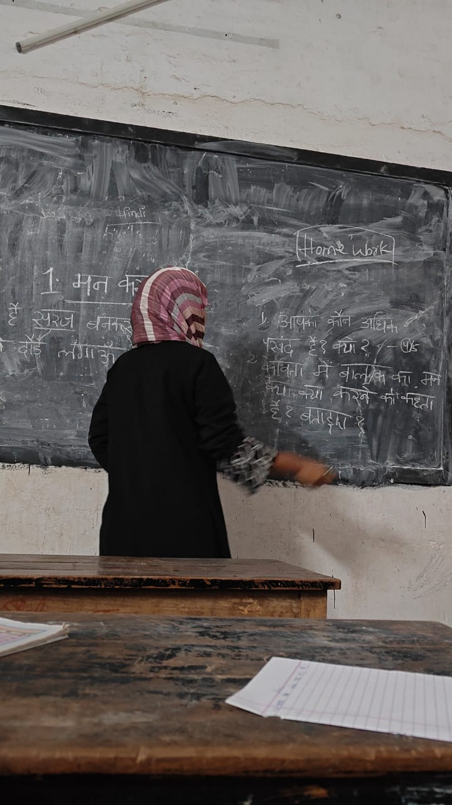
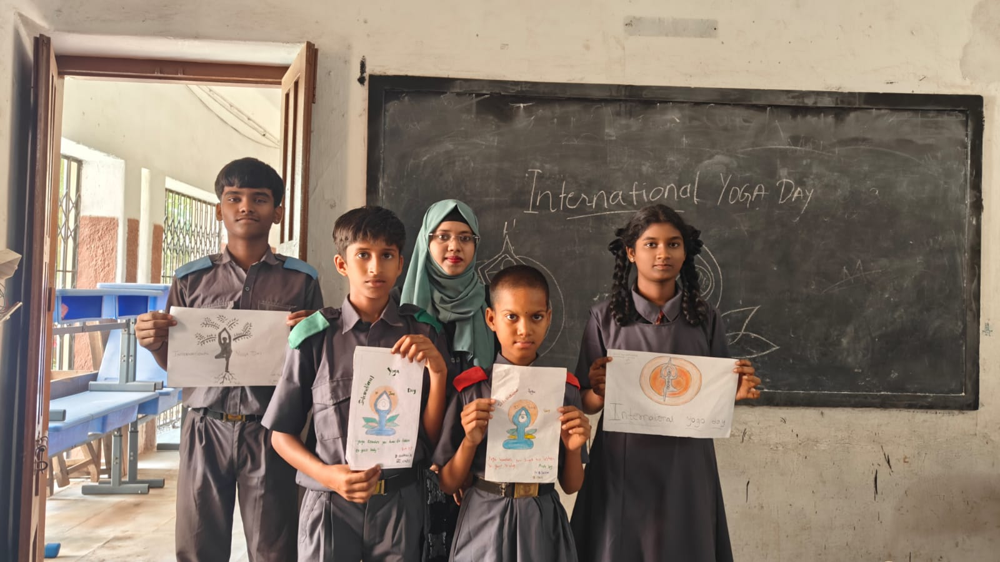
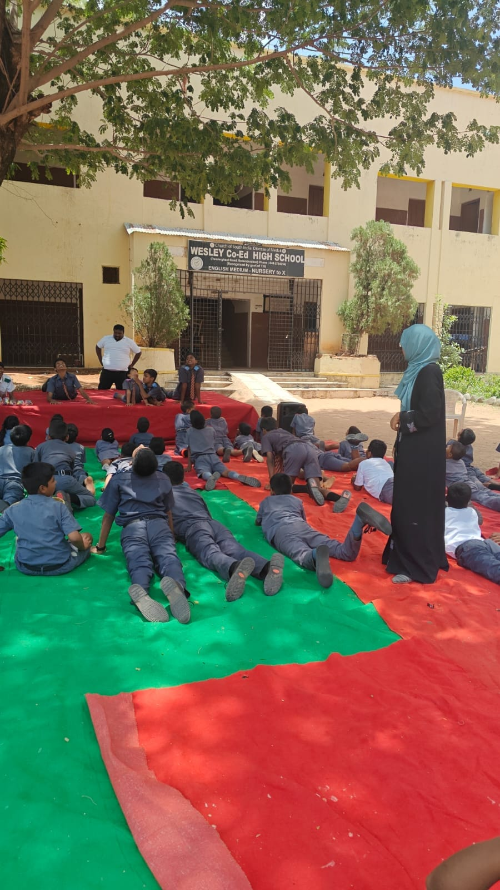
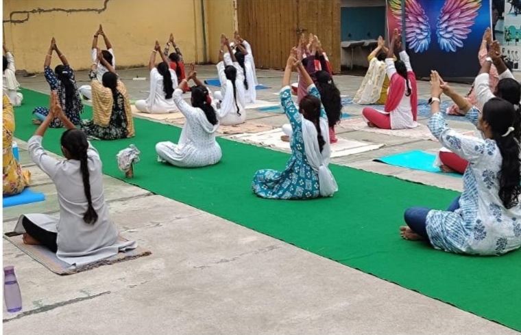
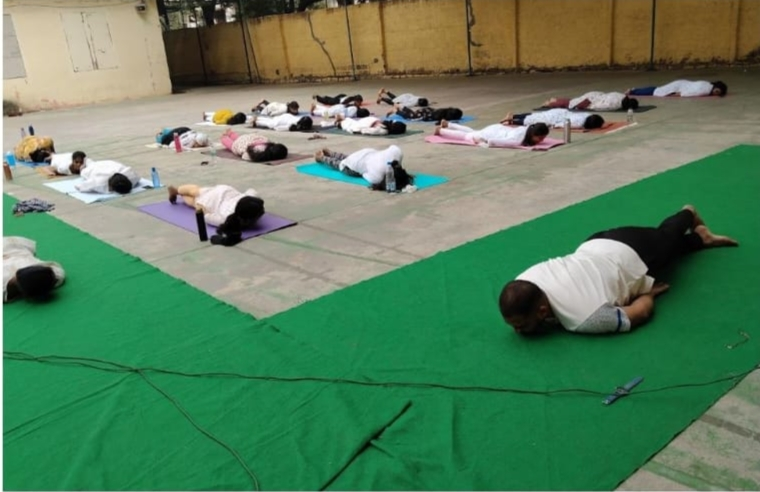
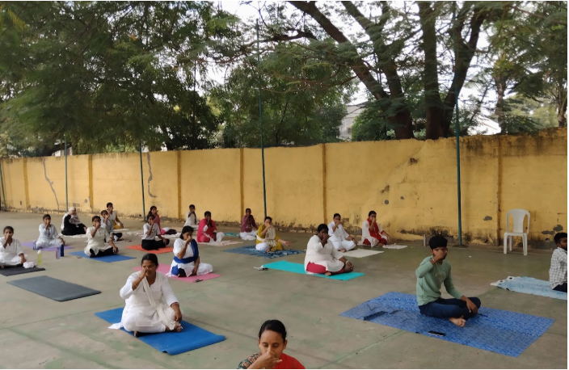

Building the foundation.
Building the foundation of education, pedagogy, and professional growth.

Orientation Program
My journey in the B.Ed program began with the orientation program. The session introduced us to the academic structure of the programme, the syllabus, pedagogy subjects, and the expectations of a student teacher.
It was an important beginning that helped me understand the responsibilities of a teacher and prepared me to connect theoretical learning with practical classroom experiences.
My First Seminar
My first seminar during the B.Ed programme was on Education Psychology. It was one of my first opportunities to explore an academic topic through seminar-based learning.
Preparing for the seminar helped me develop a better understanding of the subject while improving my communication, presentation skills, confidence, and ability to explain ideas clearly.

Content cum Pedagogy of Biological Science
Making Science Visual
My Biological Science pedagogy focuses on bringing complex anatomical and physiological concepts to life for students through visual and interactive methods.
- ✓ Teaching Aids: Creating and utilizing detailed, handmade charts like the Anatomy of the Brain to engage students visually.
- ✓ Chalkboard Diagrams: Practicing live-drawing of complex systems, such as the human heart and circulation, to explain step-by-step processes.


Content cum Pedagogy of Hindi

Language Teaching & Methodologies
Hindi pedagogy helped me understand how language and literature can be taught effectively according to the needs and learning levels of students. The subject connected knowledge of Hindi with practical approaches to classroom teaching.
- 01 Understanding approaches for teaching Hindi grammar, language, and literature.
- 02 Using expressive language, storytelling, discussion, and other learner-centred techniques.
- 03 Developing classroom activities, board-work, and learning tasks to reinforce concepts.
Yoga Education
Yoga Education introduced an important connection between physical well-being and education. During International Yoga Day, I participated in creative and practical activities highlighting fitness, discipline, and a healthy lifestyle.

Creative Expression

Practical Application

Group Yoga Practice

Yoga Day Artwork

Yoga Asanas
Semester I Reflection
Semester I provided the foundation for my journey as a student teacher. Through orientation, academic seminars, pedagogy learning, and educational activities, I began developing a clearer understanding of teaching and learning.